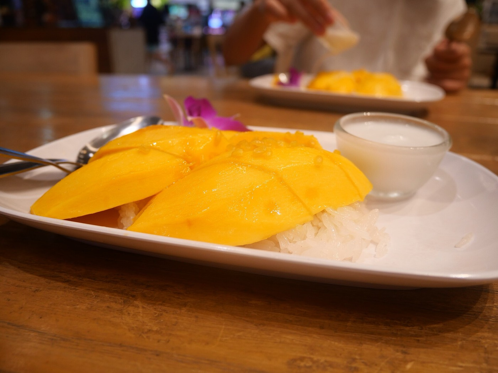
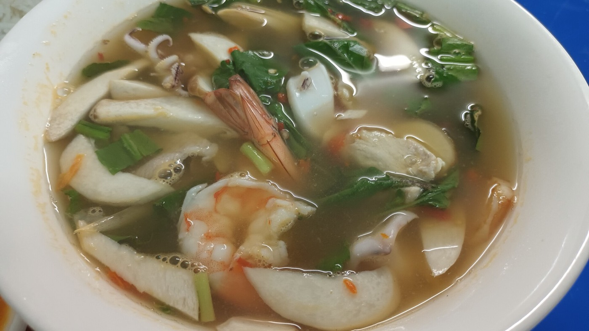

Pi Nan's open kitchen on the Maenam road. Thai food, big plates.


The kitchen is right at the front, so you can see your food made. It is a small, family place with a few tables by the road.
Your hours go here. Tell us and we will add them.